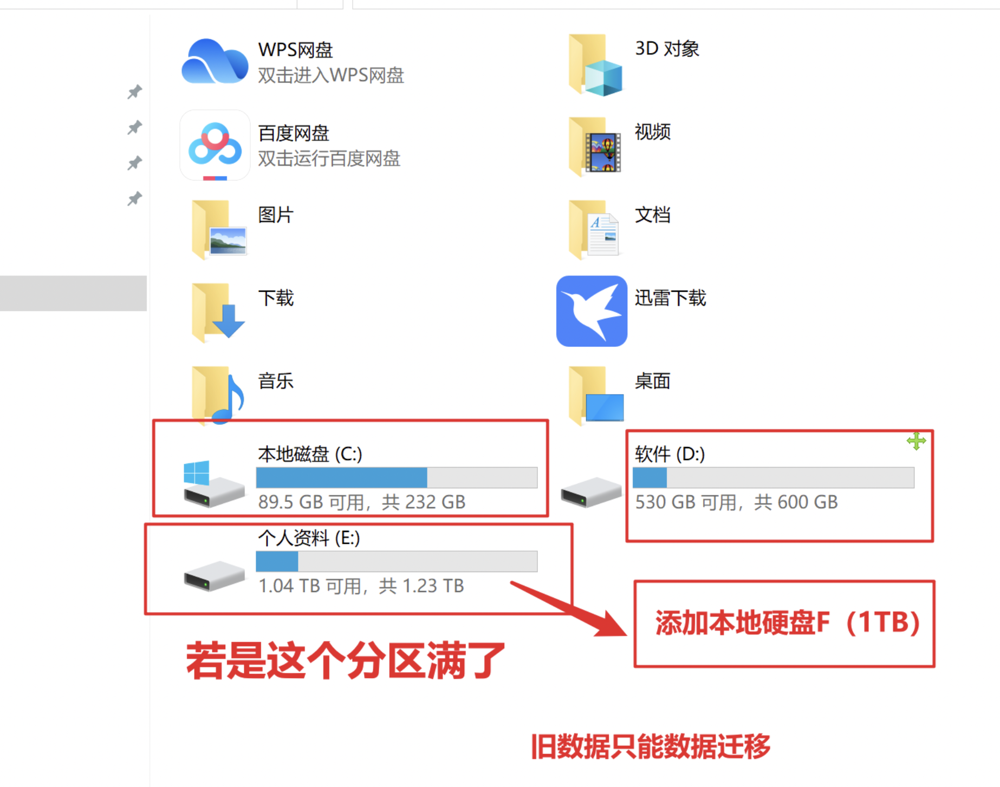
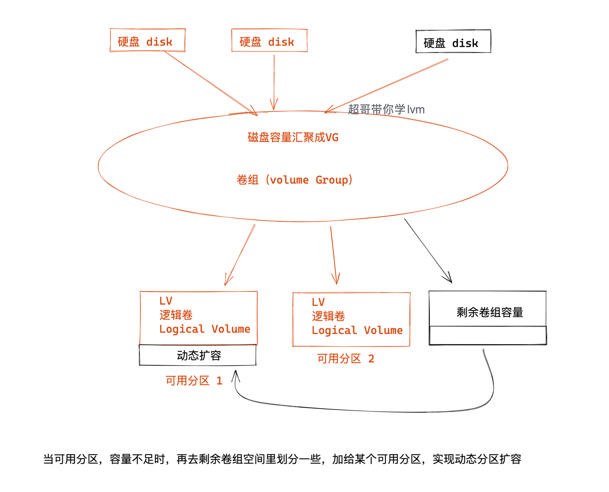
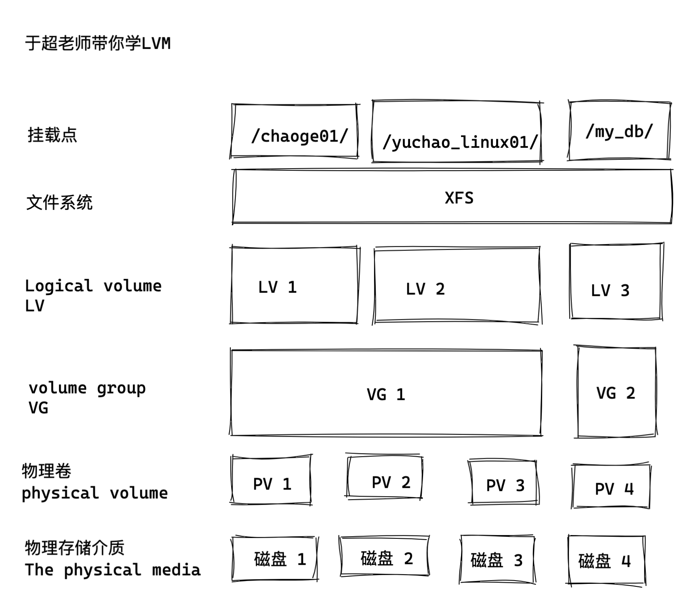
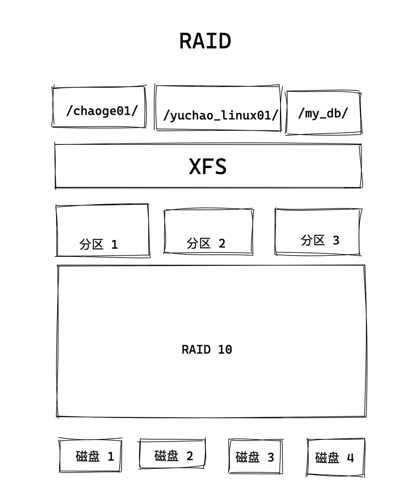
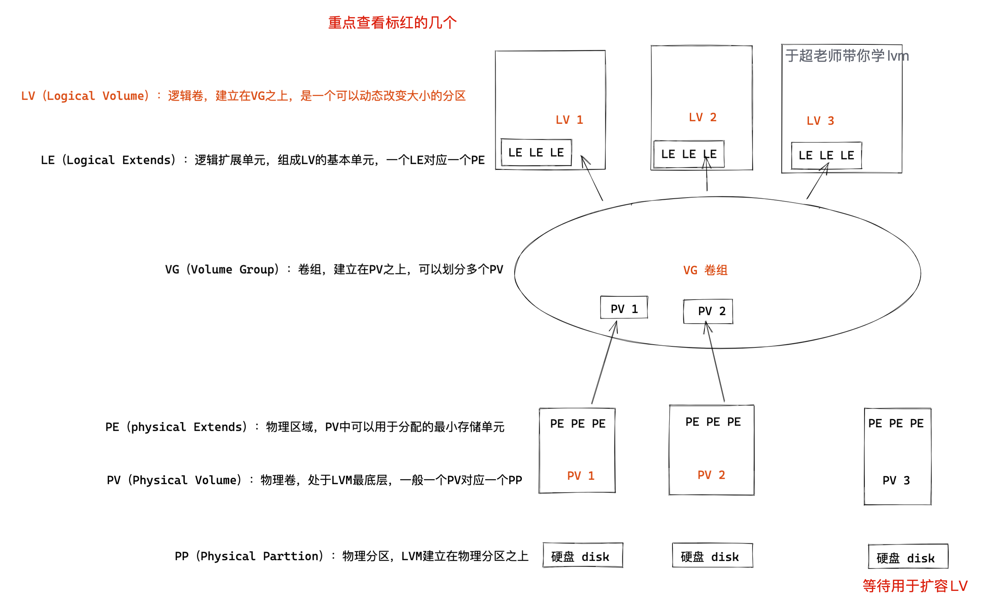
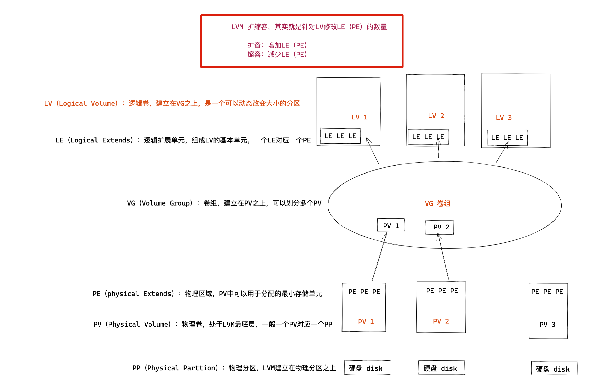
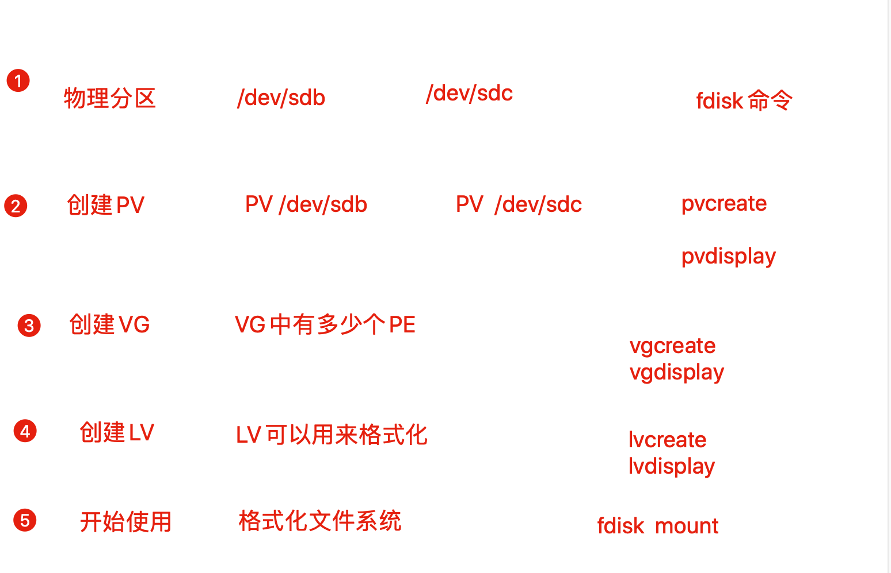

3-14-lvm逻辑卷
前面讲解了磁盘阵列raid，可以提高硬盘的读写速度，以及保证数据安全性。
但是在硬盘分区好之后，硬盘的容量就已经确定好了，比如4块硬盘的raid 10，如果存储的数据继续增长，但是磁盘容量却不够了，再想调整磁盘空间就很麻烦了。
- 不同的分区相对独立，没有关系，可能空间利用率很低
- 某一个分区满了的时候，无法扩充，只能重新分区、设置容量、 新建文件系统，很是麻烦
试想，企业里的生产服务器，一开始没有规划好磁盘容量，随着用户增长，磁盘可能会逐渐填满
这时候你只能添加新硬盘，新分区
但是旧的数据还在旧的磁盘分区上，你就只能停止业务进行数据迁移了。
但是如果你用了lvm，你可以将多个物理分区、抽象为一个逻辑卷组，并且这个逻辑卷组是可以动态扩容、缩容的。
当逻辑卷组容量不够了，只需要买新硬盘，通过命令再添加到这个指定的逻辑卷组中，可以在不停机的情况下，立即实现扩容，且被linux识别，那可是太巴适了。
这个道理和你在windows中，添加新硬盘也一样的。

什么是LVM
LVM(Logical Volume Manager)逻辑卷管理，是一种将一个或多个硬盘的分区在逻辑上集合，相当于一个大硬盘来使用，当硬盘的空间不够使用的时候，可以继续将其它的硬盘的分区加入其中，这样可以事项一种磁盘空间的动态管理，相对于普通的磁盘分区有很大的灵活性。
使用普通的磁盘分区，当一个磁盘的分区空间不够使用的时候，可能就会带来很大的麻烦。
逻辑卷（LVM）：它是Linux环境下对==磁盘分区进行管理==的一种机制，它是建立在==物理存储设备==之上的一个抽象层，优点在于灵活管理。
基于分区创建lvm
- 硬盘的
多个分区由lvm统一为卷组，可以弹性的调整卷组的大小，充分利用硬盘容量 - 文件系统创建在逻辑卷上，逻辑卷可以根据需求改变大小（卷组总容量范围内）
基于硬盘创建lvm
- 多块硬盘做成逻辑卷，将整个逻辑卷同意管理，可以动态对分区进行扩缩空间容量
图解lvm工作流程

LVM和RAID图解
Lvm

raid

理解LVM原理名词
- PP（Physical Parttion）：物理分区，LVM建立在物理分区之上
- PV（Physical Volume）：物理卷，处于LVM最底层，一般一个PV对应一个PP
- PE（physical Extends）：物理区域，PV中可以用于分配的最小存储单元，同一个VG中所有的PV的PE大小相同，如1M、2M
- VG（Volume Group）：卷组，建立在PV之上，可以划分多个PV
- LE（Logical Extends）：逻辑扩展单元，组成LV的基本单元，一个LE对应一个PE
- LV（Logical Volume）：逻辑卷，建立在VG之上，是一个可以动态改变大小的分区

lvm重点概念
- 物理卷（Physical Volume，PV）
物理卷是底层==真正提供容量==，存放数据的设备,它可以是整个硬盘、硬盘上的分区等。
- 卷组（Volume Group, VG）
卷组建立在物理卷之上，它由==一个或多个物理卷==组成。即把物理卷整合起来提供容量分配。 一个LVM系统中可以只有一个卷组，也可以包含多个卷组。
- 逻辑卷（Logical Volume, LV）
逻辑卷建立在卷组之上，它是从卷组中“切出”的一块空间。它是==最终用户使用的逻辑设==备。逻辑卷创建之后，其==大小可以伸缩==。
- 物理区域 PE（physical extent）
每一个物理卷被划分为称为PE(Physical Extents)的基本单元，具有唯一编号的PE是能被LVM寻址的最小单元。PE的大小可指定，默认为4 MB。 PE的大小一旦确定将不能改变，同一个卷组中的所有物理卷的PE的大小是一致的。 4MB=4096kb=4096kb/4kb=1024个block
说明：
- 硬盘读取数据最小单位1个扇区512字节
- 操作读取数据最小单位1个数据块=8*512字节=4096字节=4KB
- lvm寻址最小单位1个PE=4MB
lvm扩容原理
LVM是通过交换PE的方式，达到弹性变更文件系统大小的
- 剔除原本LV中的PE，就可以减少LV的容量
- 把其他PE添加到LV，就可以扩容LV容量
- 一般默认PE大小是4M，LVM最多有65534个PE，所以LVM最大的VG是256G单位
- PE是LVM最小的存存储单位，类似文件系统的block单位，因此PE大小影响VG容量
- LV如同/dev/sd[a-z]的分区概念。

LVM优点
- 文件系统可以跨多个磁盘，大小不会受到磁盘限制
- 可在系统运行的情况下，动态扩展文件系统大小
- 可以增加新的磁盘到LVM的存储池中
lvm工作流程
- 物理磁盘
- 命令创建pv
- 创建卷组vg
- 创建逻辑卷lv
- 格式化lv文件系统
- 挂载使用
- 物理分区阶段：将物理磁盘
fdisk格式化修改System ID为LVM标记（8e） - PV阶段：通过
pvcreate、pvdisplay将Linux分区处理为物理卷PV - VG阶段：接下来通过
vgcreate、vgdisplay将创建好的物理卷PV处理为卷组VG - LV阶段：通过
lvcreate将卷组分成若干个逻辑卷LV - 开始使用：通过
mkfs对LV格式化，最后挂载LV使用

lvm常用命令汇总
| 操作 | pv命令 | vg命令 | lv命令 |
|---|---|---|---|
| 列出display | pvs | vgs | lvs |
| 扩容extend | vgextend | lvextend | |
| 缩容reduct | vgreduce | Lvreduce | |
| 删除remove | pvremove | vgremove | lvremove |
| 改变容量resize | vgresize |
物理卷（pv）管理
| 命令 | 功能 |
|---|---|
| pvcreate | 创建物理卷 |
| pvscan | 查看物理卷信息 |
| pvdisplay | 查看各个物理卷的详细参数 |
| pvremove | 删除物理卷 |
pvcreate
# 将普通的分区加上PV属性
# 例如：将分区/dev/sda6创建为物理卷
pvcreate /dev/sda6
实践
[yuchao-linux-242 root ~]#pvs
PV VG Fmt Attr PSize PFree
/dev/sda2 centos lvm2 a-- <19.00g 0
[yuchao-linux-242 root ~]#lsblk
NAME MAJ:MIN RM SIZE RO TYPE MOUNTPOINT
sda 8:0 0 20G 0 disk
├─sda1 8:1 0 1G 0 part /boot
└─sda2 8:2 0 19G 0 part
├─centos-root 253:0 0 17G 0 lvm /
└─centos-swap 253:1 0 2G 0 lvm [SWAP]
sdb 8:16 0 20G 0 disk
sr0 11:0 1 1024M 0 rom
给新硬盘sdb创建为物理卷，可以用于创建卷组
[yuchao-linux-242 root ~]#pvcreate /dev/sdb
Physical volume "/dev/sdb" successfully created.
[yuchao-linux-242 root ~]#
[yuchao-linux-242 root ~]#
[yuchao-linux-242 root ~]#pvs
PV VG Fmt Attr PSize PFree
/dev/sda2 centos lvm2 a-- <19.00g 0
/dev/sdb lvm2 --- 20.00g 20.00g
pvremove
# 删除分区的PV属性
# 例如：删除分区/dev/sda6的物理卷属性
pvremove /dev/sda6
pvscan、pvdisplay
- 都是用来查看PV的信息
pvdisplay更为详细
[root@local-pyyu ~]# pvscan |grep sd[b-c]
PV /dev/sdb VG storage lvm2 [<5.00 GiB / <5.00 GiB free]
PV /dev/sdc VG storage lvm2 [<5.00 GiB / <5.00 GiB free]
可以看到sdb是一个新的物理卷
[yuchao-linux-242 root ~]#pvdisplay
--- Physical volume ---
PV Name /dev/sda2
VG Name centos
PV Size <19.00 GiB / not usable 3.00 MiB
Allocatable yes (but full)
PE Size 4.00 MiB
Total PE 4863
Free PE 0
Allocated PE 4863
PV UUID S2y7zo-9SQ9-prrr-ZOtT-NdW8-vVLo-jFwngl
"/dev/sdb" is a new physical volume of "20.00 GiB"
--- NEW Physical volume ---
PV Name /dev/sdb
VG Name
PV Size 20.00 GiB
Allocatable NO
PE Size 0
Total PE 0
Free PE 0
Allocated PE 0
PV UUID sD8wJO-5Pv7-Ksf4-wHgp-oDMJ-gUNK-eviPnd
卷组（VG）管理相关命令
| 命令 | 功能 |
|---|---|
| vgcreate | 创建卷组 |
| vgscan | 查看卷组信息 |
| vgdisplay | 查看卷组的详细参数 |
| vgreduce | 缩小卷组，把物理卷从卷组中删除 |
| vgextend | 扩展卷组，把某个物理卷添加到卷组中 |
| vgremove | 删除卷组 |
实践
[yuchao-linux-242 root ~]#vgcreate vg0 /dev/sdb
Volume group "vg0" successfully created
[yuchao-linux-242 root ~]#
[yuchao-linux-242 root ~]#vgs
VG #PV #LV #SN Attr VSize VFree
centos 1 2 0 wz--n- <19.00g 0
vg0 1 0 0 wz--n- <20.00g <20.00g
逻辑卷（LV）管理相关命令
lvcreate
-L 指定逻辑卷的大小，单位为“kKmMgGtT”字节
-l 指定逻辑卷的大小（LE个数）
-n 后面跟逻辑卷名
-s 创建快照
| 命令 | 功能 |
|---|---|
| lvcreate | 创建逻辑卷 |
| lvscan | 查看逻辑卷信息 |
| lvdisplay | 查看逻辑卷的具体参数 |
| lvextend | 增大逻辑卷大小 |
| lvreduce | 减小逻辑卷大小 |
| lvremove | 删除逻辑卷 |
实践
查看当前逻辑卷信息
[yuchao-linux-242 root ~]#lvs
LV VG Attr LSize Pool Origin Data% Meta% Move Log Cpy%Sync Convert
root centos -wi-ao---- <17.00g
swap centos -wi-ao---- 2.00g
[yuchao-linux-242 root ~]#
创建逻辑卷，可以直接指定大小，比如10G
也可以设置使用卷组的百分比容量
40%VG也就是，20G的4成，差不多8G大小
简短信息
[yuchao-linux-242 root ~]#lvcreate -l 40%VG -n yc-lv1 vg0
Logical volume "yc-lv1" created.
[yuchao-linux-242 root ~]#
[yuchao-linux-242 root ~]#lvs
LV VG Attr LSize Pool Origin Data% Meta% Move Log Cpy%Sync Convert
root centos -wi-ao---- <17.00g
swap centos -wi-ao---- 2.00g
yc-lv1 vg0 -wi-a----- <8.00g
完整信息
[yuchao-linux-242 root ~]#lvscan
ACTIVE '/dev/vg0/yc-lv1' [<8.00 GiB] inherit
ACTIVE '/dev/centos/swap' [2.00 GiB] inherit
ACTIVE '/dev/centos/root' [<17.00 GiB] inherit
清理lvm环境
比如刚才分别创建了
pv
vg
lv
依次删除即可
删除lv
[yuchao-linux-242 root ~]#lvremove /dev/vg0/yc-lv1
Do you really want to remove active logical volume vg0/yc-lv1? [y/n]: y
Logical volume "yc-lv1" successfully removed
删除卷组
[yuchao-linux-242 root ~]#vgremove vg0
Volume group "vg0" successfully removed
删除pv
[yuchao-linux-242 root ~]#pvremove /dev/sdb
Labels on physical volume "/dev/sdb" successfully wiped.
lvm实战
要求创建一个2.5G的逻辑卷。
思路：
1. 物理的设备
2. 将物理设备做成物理卷
3. 创建卷组并将物理卷加入其中
4. 创建逻辑卷
5. 格式化逻辑卷
6. 挂载使用
步骤1
准备好物理设备，sdb硬盘
[root@linux0224 ~]# lsblk /dev/sdb
NAME MAJ:MIN RM SIZE RO TYPE MOUNTPOINT
sdb 8:16 0 20G 0 disk
├─sdb1 8:17 0 2G 0 part
├─sdb2 8:18 0 2G 0 part
├─sdb3 8:19 0 2G 0 part
├─sdb4 8:20 0 1K 0 part
├─sdb5 8:21 0 2G 0 part
├─sdb6 8:22 0 2G 0 part
└─sdb7 8:23 0 2G 0 part
1.得先下载lvm软件包，提供的命令
[yuchao-linux-242 root ~]#yum install lvm2 -y
2.创建物理卷
[root@linux0224 ~]# pvcreate /dev/sdb1 /dev/sdb2
Physical volume "/dev/sdb1" successfully created.
Physical volume "/dev/sdb2" successfully created.
[root@linux0224 ~]#
查看物理卷
[root@linux0224 ~]# pvs
PV VG Fmt Attr PSize PFree
/dev/sda2 centos lvm2 a-- <19.00g 0
/dev/sdb1 lvm2 --- 2.00g 2.00g
/dev/sdb2 lvm2 --- 2.00g 2.00g
查看详细信息
[root@linux0224 ~]# pvdisplay /dev/sdb1
"/dev/sdb1" is a new physical volume of "2.00 GiB"
--- NEW Physical volume ---
PV Name /dev/sdb1
VG Name
PV Size 2.00 GiB
Allocatable NO
PE Size 0
Total PE 0
Free PE 0
Allocated PE 0
PV UUID E8ua4C-eAWP-MpEz-RERX-gXlj-4byL-bOUzxV
3.创建卷组，加入物理卷PV
[root@linux0224 ~]# vgcreate vg01 /dev/sdb1 /dev/sdb2
Volume group "vg01" successfully created
查看卷组信息
[root@linux0224 ~]# vgs vg01
VG #PV #LV #SN Attr VSize VFree
vg01 2 0 0 wz--n- 3.99g 3.99g
[root@linux0224 ~]# vgdisplay vg01
--- Volume group ---
VG Name vg01
System ID
Format lvm2
Metadata Areas 2
Metadata Sequence No 1
VG Access read/write
VG Status resizable
MAX LV 0
Cur LV 0
Open LV 0
Max PV 0
Cur PV 2
Act PV 2
VG Size 3.99 GiB
PE Size 4.00 MiB
Total PE 1022
Alloc PE / Size 0 / 0
Free PE / Size 1022 / 3.99 GiB
VG UUID MbHE2G-swQJ-K3eS-f6S2-vHBH-B7oP-wdMxCy
4.创建逻辑卷
-n：指定逻辑卷的名字
-L：指定逻辑卷的大小
-l：指定逻辑卷的大小
举例：
-l 100 100个PE，每个PE大小默认4M，故逻辑卷大小为400M
-l 50%free 卷组剩余空间的50%
[root@linux0224 ~]# lvcreate -n lv01 -L 2.5G vg01
Logical volume "lv01" created.
查看逻辑卷信息
[root@linux0224 ~]#
[root@linux0224 ~]# lvdisplay /dev/vg01/lv01
--- Logical volume ---
LV Path /dev/vg01/lv01
LV Name lv01
VG Name vg01
LV UUID ulay1d-bdza-xV3e-YXHa-ktyo-dZQW-lkeCgP
LV Write Access read/write
LV Creation host, time linux0224, 2022-03-04 03:22:16 +0800
LV Status available
# open 0
LV Size 2.50 GiB
Current LE 640
Segments 2
Allocation inherit
Read ahead sectors auto
- currently set to 8192
Block device 253:2
可以在系统中的两个地方，找到lv分区信息
[root@linux0224 ~]# ll /dev/mapper/vg01-lv01
lrwxrwxrwx 1 root root 7 Mar 4 03:22 /dev/mapper/vg01-lv01 -> ../dm-2
[root@linux0224 ~]# ll /dev/vg01/lv01
lrwxrwxrwx 1 root root 7 Mar 4 03:22 /dev/vg01/lv01 -> ../dm-2
查看卷组还剩余多少空间
[root@linux0224 ~]# vgs vg01
VG #PV #LV #SN Attr VSize VFree
vg01 2 1 0 wz--n- 3.99g 1.49g
再创建一个200M的逻辑卷，每个LE默认4M，用-l 50 参数指定50个LE，因此是200M
[root@linux0224 ~]# lvcreate -n lv02 -l 50 vg01
Logical volume "lv02" created.
[root@linux0224 ~]#
查看lv02大小
[root@linux0224 ~]# lvs /dev/vg01/lv02
LV VG Attr LSize Pool Origin Data% Meta% Move Log Cpy%Sync Convert
lv02 vg01 -wi-a----- 200.00m
查看剩余vg01大小
[root@linux0224 ~]# vgs vg01
VG #PV #LV #SN Attr VSize VFree
vg01 2 2 0 wz--n- 3.99g <1.30g
创建卷组剩余空间的50%，逻辑卷lv03
[root@linux0224 ~]# lvcreate -n lv03 -l 50%free vg01
Logical volume "lv03" created.
[root@linux0224 ~]#
查看lv03
[root@linux0224 ~]# lvs /dev/vg01/lv03
LV VG Attr LSize Pool Origin Data% Meta% Move Log Cpy%Sync Convert
lv03 vg01 -wi-a----- 664.00m
查看此时vg剩余
[root@linux0224 ~]# vgs vg01
VG #PV #LV #SN Attr VSize VFree
vg01 2 3 0 wz--n- 3.99g 664.00m
5.格式化逻辑卷lv01
[root@linux0224 ~]# mkfs.xfs /dev/vg01/lv01
meta-data=/dev/vg01/lv01 isize=512 agcount=4, agsize=163840 blks
= sectsz=512 attr=2, projid32bit=1
= crc=1 finobt=0, sparse=0
data = bsize=4096 blocks=655360, imaxpct=25
= sunit=0 swidth=0 blks
naming =version 2 bsize=4096 ascii-ci=0 ftype=1
log =internal log bsize=4096 blocks=2560, version=2
= sectsz=512 sunit=0 blks, lazy-count=1
realtime =none extsz=4096 blocks=0, rtextents=0
6.挂载逻辑卷使用
[root@linux0224 ~]# mount /dev/vg01/lv01 /chaoge-linux/
[root@linux0224 ~]#
[root@linux0224 ~]# df -hT |grep chaoge
/dev/mapper/vg01-lv01 xfs 2.5G 33M 2.5G 2% /chaoge-linux
写入数据
[root@linux0224 ~]#
[root@linux0224 ~]# touch /chaoge-linux/于超老师带你学lvm.log
[root@linux0224 ~]#
[root@linux0224 ~]# ls /chaoge-linux
于超老师带你学lvm.log
取消挂载
[root@linux0224 ~]# umount /chaoge-linux
[root@linux0224 ~]#
[root@linux0224 ~]# df -hT |grep chaoge
[root@linux0224 ~]#
lvm动态扩容
重新挂载上逻辑卷 lv01
[root@linux0224 ~]# mount /dev/vg01/lv01 /chaoge-linux/
[root@linux0224 ~]#
[root@linux0224 ~]# df -hT |grep chaoge
/dev/mapper/vg01-lv01 xfs 2.5G 33M 2.5G 2% /chaoge-linux
任务：你现在觉得这个分区太小了，不够用，如何扩容？
思路：
- 查看该挂载点，对应的逻辑卷是哪一个
/dev/mapper/vg01-lv01 - 查看该逻辑卷所在的卷组，是否还有剩余空间。
- 如果vg01空间不够，就得先扩容卷组，再扩容逻辑卷
- 如果vg01空间足够，直接扩容逻辑卷
1.查看挂载点，属于哪个逻辑卷
[root@linux0224 ~]# df -hT |grep chaoge
/dev/mapper/vg01-lv01 xfs 2.5G 33M 2.5G 2% /chaoge-linux
2.查看逻辑卷大小
[root@linux0224 ~]# lvs /dev/mapper/vg01-lv01
LV VG Attr LSize Pool Origin Data% Meta% Move Log Cpy%Sync Convert
lv01 vg01 -wi-ao---- 2.50g
3.查看卷组空间
[root@linux0224 ~]# vgs vg01
VG #PV #LV #SN Attr VSize VFree
vg01 2 3 0 wz--n- 3.99g 664.00m
4.卷组空间已经很少了，需要额外添加新硬盘（或者未使用的磁盘分区），先扩容卷组
1）添加新硬盘（新分区）
[root@linux0224 ~]#
[root@linux0224 ~]# lsblk /dev/sdb
NAME MAJ:MIN RM SIZE RO TYPE MOUNTPOINT
sdb 8:16 0 20G 0 disk
├─sdb1 8:17 0 2G 0 part
│ └─vg01-lv01 253:2 0 2.5G 0 lvm /chaoge-linux
├─sdb2 8:18 0 2G 0 part
│ ├─vg01-lv01 253:2 0 2.5G 0 lvm /chaoge-linux
│ ├─vg01-lv02 253:3 0 200M 0 lvm
│ └─vg01-lv03 253:4 0 664M 0 lvm
├─sdb3 8:19 0 2G 0 part
├─sdb4 8:20 0 1K 0 part
├─sdb5 8:21 0 2G 0 part
├─sdb6 8:22 0 2G 0 part
└─sdb7 8:23 0 2G 0 part
2) 先把物理设备，制作为物理卷
[root@linux0224 ~]# pvcreate /dev/sdb5
Physical volume "/dev/sdb5" successfully created.
[root@linux0224 ~]# pvs
PV VG Fmt Attr PSize PFree
/dev/sda2 centos lvm2 a-- <19.00g 0
/dev/sdb1 vg01 lvm2 a-- <2.00g 0
/dev/sdb2 vg01 lvm2 a-- <2.00g 664.00m
/dev/sdb5 lvm2 --- 2.00g 2.00g
3) 添加物理卷到卷组（卷组扩容）
[root@linux0224 ~]# vgextend vg01 /dev/sdb5
Volume group "vg01" successfully extended
[root@linux0224 ~]#
[root@linux0224 ~]# pvs
PV VG Fmt Attr PSize PFree
/dev/sda2 centos lvm2 a-- <19.00g 0
/dev/sdb1 vg01 lvm2 a-- <2.00g 0
/dev/sdb2 vg01 lvm2 a-- <2.00g 664.00m
/dev/sdb5 vg01 lvm2 a-- <2.00g <2.00g
注意：
正常情况下，应该先将/dev/sdb5物理设备创建为物理卷再加入到卷组中；如果直接加入卷组，系统会自动帮你将其做成物理卷。
4)查看扩容后的卷组
[root@linux0224 ~]# vgs
VG #PV #LV #SN Attr VSize VFree
centos 1 2 0 wz--n- <19.00g 0
vg01 3 3 0 wz--n- <5.99g 2.64g
5.扩容逻辑卷，成功从2.5G+2G= 4.5G了
[root@linux0224 ~]# lvextend -L +2G /dev/vg01/lv01
Size of logical volume vg01/lv01 changed from 2.50 GiB (640 extents) to 4.50 GiB (1152 extents).
Logical volume vg01/lv01 successfully resized.
6.查看结果
[root@linux0224 ~]# df -h |grep chaoge
/dev/mapper/vg01-lv01 2.5G 33M 2.5G 2% /chaoge-linux
发现还未更新容量
7.使用命令，同步文件系统，只针对xfs系统。
[root@linux0224 ~]# xfs_growfs /dev/vg01/lv01
meta-data=/dev/mapper/vg01-lv01 isize=512 agcount=4, agsize=163840 blks
= sectsz=512 attr=2, projid32bit=1
= crc=1 finobt=0 spinodes=0
data = bsize=4096 blocks=655360, imaxpct=25
= sunit=0 swidth=0 blks
naming =version 2 bsize=4096 ascii-ci=0 ftype=1
log =internal bsize=4096 blocks=2560, version=2
= sectsz=512 sunit=0 blks, lazy-count=1
realtime =none extsz=4096 blocks=0, rtextents=0
data blocks changed from 655360 to 1179648
[root@linux0224 ~]#
[root@linux0224 ~]# df -h |grep chaoge
/dev/mapper/vg01-lv01 4.5G 33M 4.5G 1% /chaoge-linux
xfs文件系统只支持增大分区空间的情况，不支持减小的情况（切记！！！！！）。
硬要减小的话，只能在减小后将逻辑分区重新通过mkfs.xfs命令重新格式化才能挂载上，这样的话这个逻辑分区上原来的数据就丢失了。
可以选择用ext4文件系统，支持扩缩容
删除lvm
当你需要删除逻辑卷，需要提前把数据备份好，然后依次删除
- 逻辑卷
- 卷组
- 物理卷
1.取消挂载
[root@yuanlai-0224 ~]# umount /chaoge-linux/
2.删除逻辑卷lv
[root@yuanlai-0224 ~]# lvremove /dev/vg01/lv0
lv01 lv02 lv03
[root@yuanlai-0224 ~]# lvremove /dev/vg01/lv01
Do you really want to remove active logical volume vg01/lv01? [y/n]: y
Logical volume "lv01" successfully removed
[root@yuanlai-0224 ~]#
3.删除卷组
删除卷组，会优先删除卷组下的逻辑卷，然后再删除卷组。
[root@yuanlai-0224 ~]# vgremove vg01
Do you really want to remove volume group "vg01" containing 2 logical volumes? [y/n]: y
Do you really want to remove active logical volume vg01/lv02? [y/n]: y
Logical volume "lv02" successfully removed
Do you really want to remove active logical volume vg01/lv03? [y/n]: y
Logical volume "lv03" successfully removed
Volume group "vg01" successfully removed
4.删除物理卷
[root@yuanlai-0224 ~]# pvs
PV VG Fmt Attr PSize PFree
/dev/sda2 centos lvm2 a-- <19.00g 0
/dev/sdb1 lvm2 --- 2.00g 2.00g
/dev/sdb2 lvm2 --- 2.00g 2.00g
/dev/sdb5 lvm2 --- 2.00g 2.00g
删除物理卷
[root@yuanlai-0224 ~]# pvremove /dev/sdb1 /dev/sdb2 /dev/sdb5
Labels on physical volume "/dev/sdb1" successfully wiped.
Labels on physical volume "/dev/sdb2" successfully wiped.
Labels on physical volume "/dev/sdb5" successfully wiped.
查看lvm相关信息，是否还有残留
[root@yuanlai-0224 ~]#
[root@yuanlai-0224 ~]# lvs
LV VG Attr LSize Pool Origin Data% Meta% Move Log Cpy%Sync Convert
root centos -wi-ao---- <17.00g
swap centos -wi-ao---- 2.00g
[root@yuanlai-0224 ~]#
[root@yuanlai-0224 ~]# pvs
PV VG Fmt Attr PSize PFree
/dev/sda2 centos lvm2 a-- <19.00g 0
[root@yuanlai-0224 ~]#
[root@yuanlai-0224 ~]# vgs
VG #PV #LV #SN Attr VSize VFree
centos 1 2 0 wz--n- <19.00g 0
[root@yuanlai-0224 ~]#